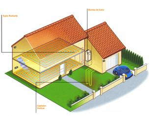
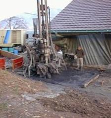

El captador vertical, es idóneo cuando la superficie del terreno no es suficiente, sólo se necesita un metro cuadrado de superficie por cada perforación.
Otra ventaja de este captador es el rendimiento del generador, ya que a mayor profundidad, más estable es la temperatura.
La profundidad de la perforación depende de las necesidades caloríficas de la vivienda.
Las sondas van desde los 80 hasta los 150m. También se puede realizar varias perforaciones.
El inconveniente de este sistema de captación por sonda vertical es el coste de la perforación. Pero, no por ello deja de ser la mejor solución junto con la capa freática.